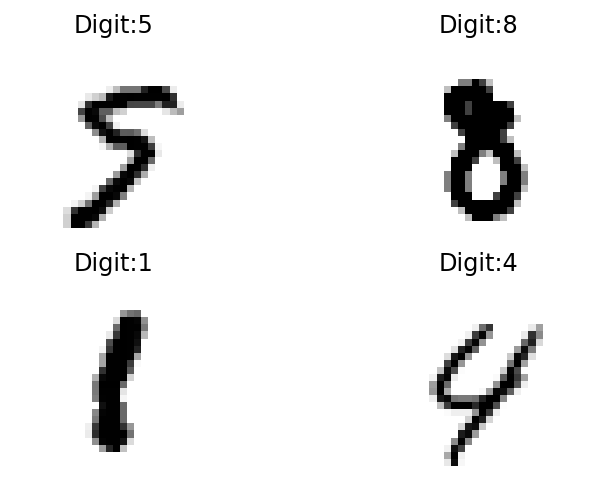
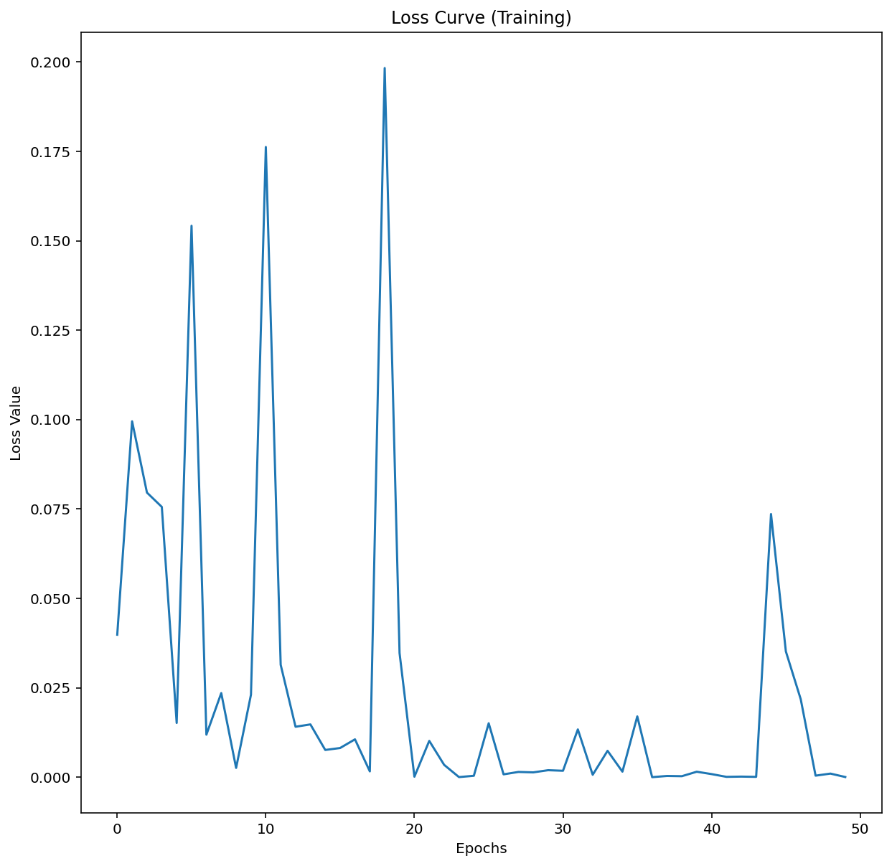

import numpy as np
import torch
import torch.nn as nn
import torchvision
import torchvision.transforms as transforms
import matplotlib.pyplot as plt
import matplotlib as mpl
%config InlineBackend.figure_format = 'retina'
%config InlineBackend.print_figure_kwargs={'facecolor' : "w"}This notebook is inspired by the Andrew Ng’s amazing Coursera course on Deep learning. The dataset we will be using the train the model on is the MNIST dataset which one of the default datasets in PyTorch.
device = 'cpu' #torch.device('cuda' if torch.cuda.is_available() else 'cpu')
print(device)cpu#Import MNIST dataset
train_dataset = torchvision.datasets.MNIST(root='data/',
train=True,
transform=torchvision.transforms.ToTensor(),
download=True)
val_dataset = torchvision.datasets.MNIST(root='data/',
train=False,
transform=torchvision.transforms.ToTensor(),
download=True)
input_tensor, label = train_dataset[0]
print('MNIST dataset with {} train data and {} test data'.format(len(train_dataset), len(val_dataset)))
print('Type of data in dataset: {} AND {}'.format(type(input_tensor), type(label)))
print('Input tensor image dimensions: {}'.format(input_tensor.shape))MNIST dataset with 60000 train data and 10000 test data
Type of data in dataset: <class 'torch.Tensor'> AND <class 'int'>
Input tensor image dimensions: torch.Size([1, 28, 28])#Model hyper-parameters for the fully connected Neural network
input_size = 784 # Image input for the digits - 28 x 28 x 1 (W-H-C) -- flattened in the end before being fed in the NN
num_hidden_layers = 1
hidden_layer_size = 50
num_classes = 10
num_epochs = 50
batch_size = 64
learning_rate = 10e-4#Convert dataset to a dataloader class for ease of doing batching and SGD operations
from torch.utils.data import Dataset, DataLoader
train_loader = DataLoader(dataset = train_dataset,
batch_size = batch_size,
shuffle=True,
num_workers = 2)
test_loader = DataLoader(dataset = val_dataset,
batch_size = batch_size,
num_workers = 2)
#Take a look at one batch
examples = iter(train_loader)
samples, labels = examples.next()
print(samples.shape, labels.shape)
#Plotting first 4 digits in the dataset:
for i in range(4):
plt.subplot(2, 2, i+1)
plt.imshow(samples[i][0], cmap=mpl.cm.binary, interpolation="nearest")
plt.title('Digit:{}'.format(labels[i]))
plt.axis("off");torch.Size([64, 1, 28, 28]) torch.Size([64])
Above, we have defined a batch-size of 100 for the training dataset with the samples as seen here to be of size = 100 x 1 x 28 x 28
#Define a model
class NeuralNet(nn.Module):
def __init__(self, input_size, num_hidden_layers, hidden_layer_size, num_classes):
super(NeuralNet, self).__init__()
self.L1 = nn.Linear(in_features = input_size, out_features = hidden_layer_size)
self.relu = nn.ReLU()
self.num_hidden_layers = num_hidden_layers
if (self.num_hidden_layers-1) > 1:
self.L_hidden = nn.ModuleList( [nn.Linear(in_features = hidden_layer_size, out_features = hidden_layer_size) for _ in range(num_hidden_layers-1)] )
self.relu_hidden = nn.ModuleList( [nn.ReLU() for _ in range(num_hidden_layers-1)] )
else:
self.L2 = nn.Linear(in_features = hidden_layer_size, out_features = hidden_layer_size)
self.L_out = nn.Linear(in_features = hidden_layer_size, out_features = num_classes)
def forward(self, x):
out = self.relu(self.L1(x))
if (self.num_hidden_layers-1) > 1:
for L_hidden, relu_hidden in zip(self.L_hidden, self.relu_hidden):
out = relu_hidden(L_hidden(out))
else:
out = self.relu(self.L2(out))
out = self.L_out(out) #No softmax or cross-entropy activation just the output from linear transformation
return outmodel = NeuralNet(input_size=input_size,
num_hidden_layers=num_hidden_layers,
hidden_layer_size=hidden_layer_size,
num_classes=num_classes)modelNeuralNet(
(L1): Linear(in_features=784, out_features=50, bias=True)
(relu): ReLU()
(L2): Linear(in_features=50, out_features=50, bias=True)
(L_out): Linear(in_features=50, out_features=10, bias=True)
)CrossEntropyLoss in Pytorch implementes Softmax activation and NLLLoss in one class.
#Loss and optimizer
criterion = nn.CrossEntropyLoss() #This is implement softmax activation for us so it is not implemented in the model
optimizer = torch.optim.Adam(model.parameters(), lr=learning_rate)
#Training loop
total_batches = len(train_loader)
losses = []
epochs = []
for epoch in range(num_epochs):
for i, (image_tensors, labels) in enumerate(train_loader):
running_loss = 0
batch_count = 0
#image tensor = 100, 1, 28, 28 --> 100, 784 input needed
image_input_to_NN = image_tensors.view(-1,28*28).to(device)
labels = labels.to(device)
#Forward pass
outputs = model(image_input_to_NN)
loss = criterion(outputs, labels)
running_loss += loss.item()
batch_count += 1
#Backward
optimizer.zero_grad() #Detach and flush the gradients
loss.backward() #Backward gradients evaluation
optimizer.step() #To update the weights/parameters in the NN
if (epoch) % 10 == 0 and (i+1) % 500 == 0:
print(f'epoch {epoch+1} / {num_epochs}, batch {i+1}/{total_batches}, loss = {loss.item():.4f}')
loss_per_epoch = running_loss / batch_count
epochs.append(epoch)
losses.append(loss_per_epoch)epoch 1 / 50, batch 500/938, loss = 0.2568
epoch 11 / 50, batch 500/938, loss = 0.0431
epoch 21 / 50, batch 500/938, loss = 0.0141
epoch 31 / 50, batch 500/938, loss = 0.0032
epoch 41 / 50, batch 500/938, loss = 0.0518fig, ax = plt.subplots(1,1, figsize=(10,10))
ax.plot(epochs, losses)
plt.title('Loss Curve (Training)')
ax.set_xlabel('Epochs')
ax.set_ylabel('Loss Value')Text(0, 0.5, 'Loss Value')
#Test
with torch.no_grad():
n_correct = 0
n_samples = 0
for images, labels in test_loader:
images = images.view(-1, 28*28).to(device)
labels = labels.to(device)
outputs = model(images)
_, predictions = torch.max(outputs, 1)
n_samples += labels.shape[0]
n_correct += (predictions == labels).sum().item() #For each correction prediction we add the correct samples
acc = 100 * n_correct / n_samples
print(f'Accuracy = {acc:.2f}%')Accuracy = 97.54%